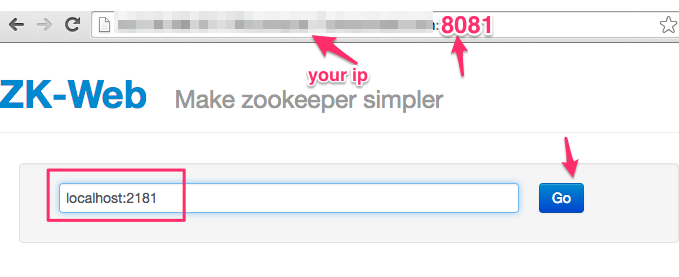
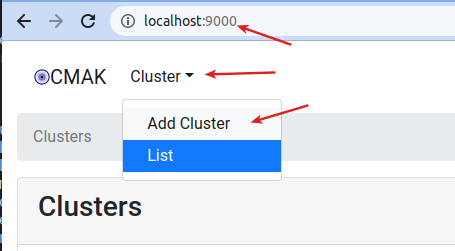
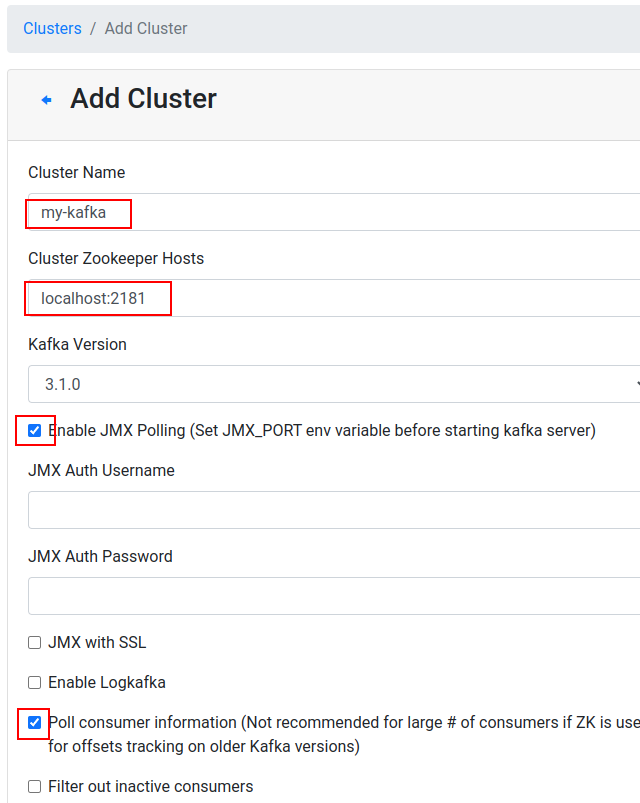
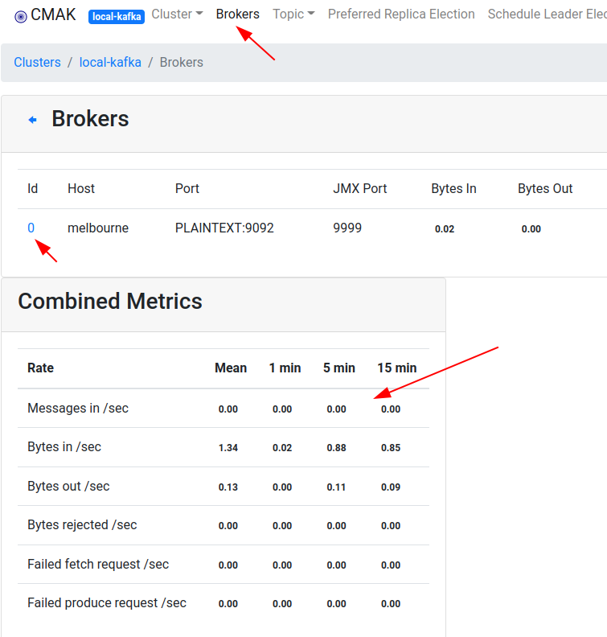

Setup UI Clients for Kafka and Zookeeper
None
15 mins
zk-web can be accessed via port 9001.
Go to http://your_ip_address:9001 in a browser. Substitute your own machine IP.

You would see an output like this:
Here we will setup Kafka Manager
Go to url : http://your_IP:9000 in your browser.
You may see a UI like this.

Access the ‘local’ cluster already defined. If one is not defined, you can define one as follows.

Explore the UI
